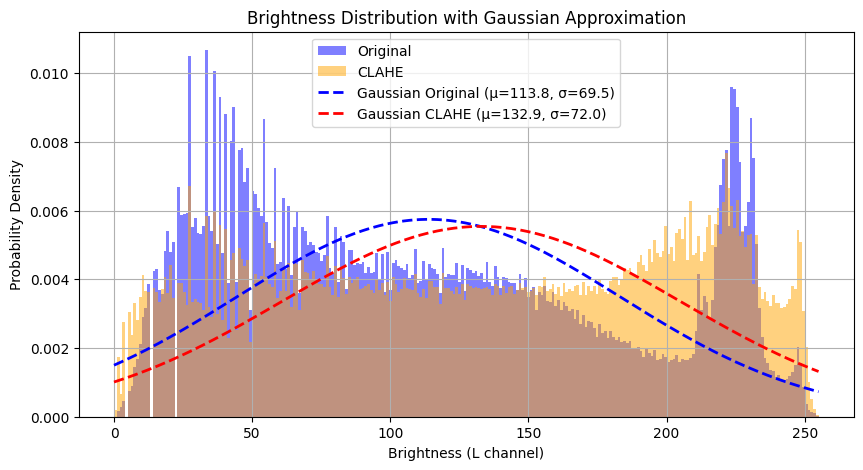
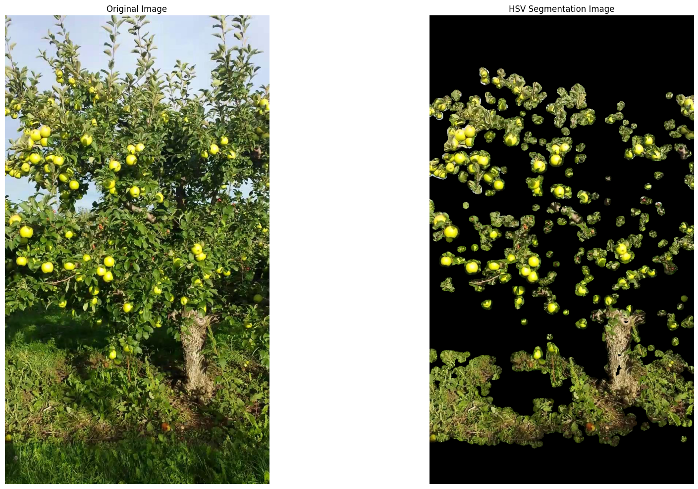
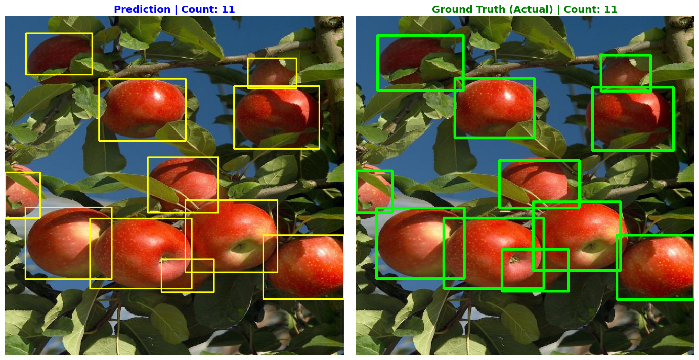
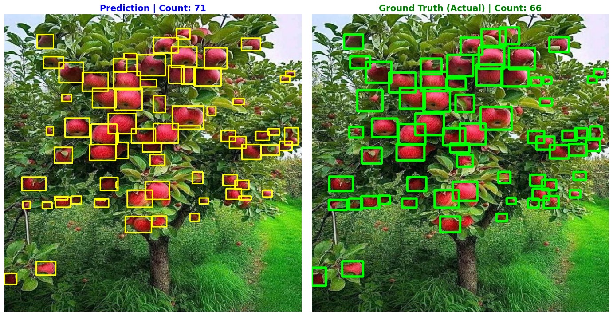

Counting apples on a tree
The task was to detect and count individual apples in orchard tree images — the perception front-end of any yield-estimation or harvesting system. What makes it hard is scale variation: the same pipeline has to work on close-range shots, where apples are large and few, and on far-range shots, where dozens of small apples crowd together against a cluttered, leafy background.
The evaluation set captured exactly that contrast — a close-range image with 11 ground-truth apples and a far-range image with 66, for 77 apples total. Detections were matched to ground truth by intersection-over-union (Jaccard index, IoU threshold 0.2), so a "hit" means a box that genuinely overlaps a real apple, not just a count that happens to line up.
Classical preprocessing into a learned detector
Rather than throw raw images at the detector, I built a preprocessing stack that makes apples easier to find, then let YOLOv8 do the final localisation. Each stage targets a specific failure mode:
- 1Brightness. CLAHE on the LAB L channel (
clipLimit = 3.0,8×8tiles) to even out orchard lighting and shadow. - 2Colour. HSV masking with separate green- and red-apple ranges to suppress foliage before detection.
- 3Texture. Laplacian edge response plus morphological closing/opening to keep textured fruit regions and drop flat background.
- 4Tiling. Decompose the image into overlapping tiles (25–30% overlap) so small, distant apples occupy enough pixels for the detector to fire.
- 5Detect & merge. YOLOv8 per tile, then non-maximum suppression to fuse duplicate boxes from the overlap regions.
Several heavier segmentation routes — watershed, GrabCut, and SLIC superpixels
(n_segments = 500, compactness = 13) with an apple-likeness score in LAB
space — were prototyped and benchmarked, but the leaner CLAHE → colour → texture → tiling stack is
what carried into the final pipeline.


Five versions, measured the same way
Each version was scored on the same 77-apple set with the same IoU-matched metric, so the numbers are directly comparable. The progression is the point — and version 4 is in the table on purpose, because it shows what breaks when a stage is removed:
| Version | Precision | Recall | F1 | Accuracy |
|---|---|---|---|---|
| V1 — raw YOLO baseline | 55.00% | 85.71% | 0.6701 | 50.38% |
| V3 — CLAHE + colour mask + crops | 81.01% | 83.12% | 0.8205 | 69.57% |
| V4 — texture + tiling, no NMS | 48.61% | 90.91% | 0.6335 | 46.36% |
| V5 — full pipeline + NMS | 86.59% | 92.21% | 0.8931 | 80.68% |
Version 4 is the instructive one: adding overlapping tiles lifted recall to 90.91% — almost nothing was missed — but without non-maximum suppression every apple in an overlap region was counted multiple times, so precision collapsed to 48.61% (74 false positives on the far-range image alone). Re-introducing NMS in version 5 fused those duplicates and recovered precision to 86.59% while keeping the high recall — the best of both. On the close-range image, version 5 reached a perfect 11/11 with no false positives.


Metric: per-detection IoU matching (Jaccard, threshold 0.2) against hand-labelled boxes; counts and confusion-matrix figures are computed in the notebook, not asserted.
What I took from it
- Preprocessing is not cosmetic — moving from raw YOLO (V1) to the full classical stack (V5) lifted F1 by more than 0.22, on the same detector and the same images.
- Tiling and NMS are a pair: tiling buys recall on small far-range fruit, but it only works if NMS is there to clean up the duplicate boxes it inevitably creates — V4 is the cautionary middle step that proves it.
- Scale dominates difficulty: close-range detection reached a perfect score, while far-range stayed the bottleneck — the honest way to report a counting system is to split the two rather than hide far-range error inside an average.